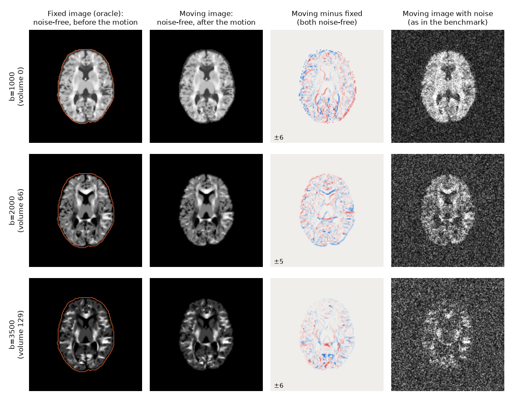
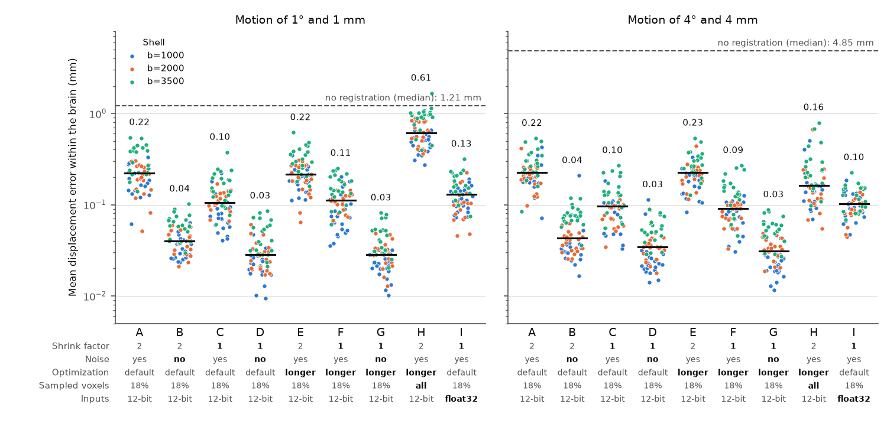
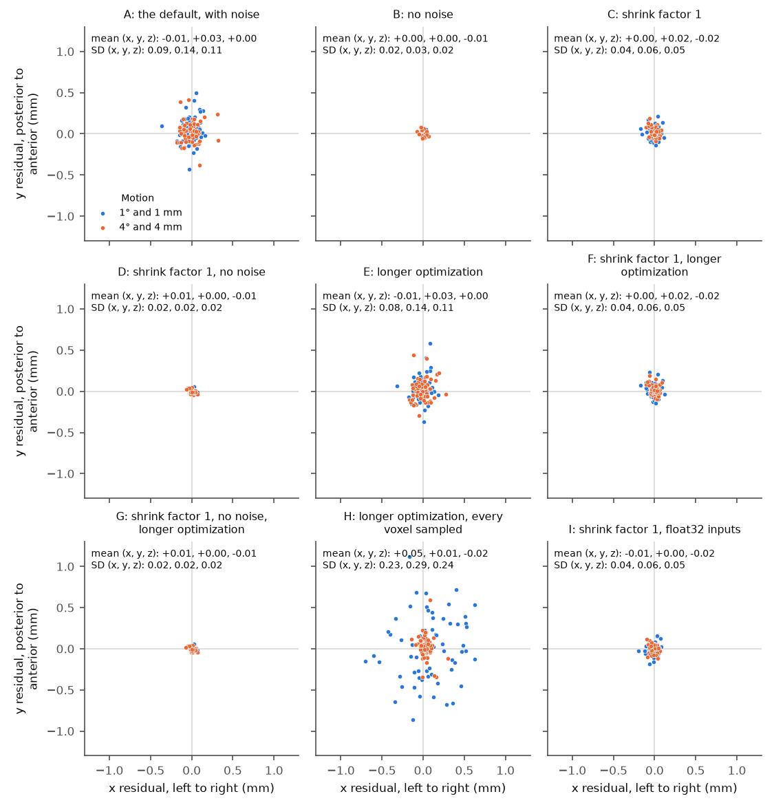

Registration accuracy¶
NiFreeze estimates head motion by registering each volume to a prediction of it. How accurate that registration can be is measured on the synthetic phantom (Synthetic reference data), where the true motion of every volume is known exactly.
What limits registration to a perfect target¶
This section reports an experiment, with ANTs, on the error that remains when registration gets the best possible fixed image (#609).
The question¶
The registration benchmark (tools/registration/bench.py,
#584) uses TRXScan’s default
adult phantom simulated with the Sherbrooke acquisition protocol, at that protocol’s
resolution of 2 mm (Synthetic reference data).
Its moved copies are made before simulation: the phantom itself is rotated and
shifted by a known rigid motion, and each moved volume is then simulated from the
moved phantom (see Data, below).
The benchmark registers each moved volume to several fixed images.
One of them is the oracle: the noise-free simulation of the same gradient
direction, with the head at its reference position, before the motion.
The oracle is what a perfect model would predict for that volume, so registering to
it removes the error of the model’s prediction.
It does not remove the noise of the moving image: in the benchmark, the moved
volumes carry the protocol’s noise, and only the oracle is noise-free.
What remains is the error of registering a noisy volume to a perfect, noise-free
fixed image; this experiment also registers the moved volumes without their noise.
With the estimator’s default ANTs settings, that error was about 0.2 mm at every
motion size, from 0.5° and 0.5 mm to 4° and 4 mm.
Over the 192 volumes, the median of the mean displacement error within the brain
(defined below) was 0.20, 0.22, 0.22 and 0.23 mm at the four sizes (the tables
derivatives/registration/sherbrooke/desc-m*_oracle.tsv of the phantom dataset).
Variant A below repeats that setting on a third of the volumes, and finds 0.22 mm at
both sizes it tests.
The error did not grow with the motion, so the size of the motion does not explain it. This experiment estimates how much of it each of five aspects of the registration accounts for, by changing them one or two at a time on the same volumes:
Resolution. The last stage of the default settings runs at shrink factor 2: ANTs computes the similarity of the two images on a grid with half as many points as the image along each axis, one eighth in total. Registration never works on the images at full resolution.
Noise. The moving volume carries the noise of the protocol, while the oracle is noise-free.
Optimization. The last stage runs at most 10 iterations, and stops earlier if the similarity stops improving. It may stop before the best transform.
Sampling. The similarity is computed on a random 18% of the grid’s points, not on all of them.
Coding of the inputs. Before writing the two images for ANTs, NiFreeze clips both to an intensity window computed from the moving image: the 1st and 99.98th percentiles, within the brain mask, of a median-filtered copy of it. It then stores the clipped intensities as 12-bit integers (4,096 levels across the window), which rounds them.
The answers hold for ANTs, with variations of NiFreeze’s default command, on this phantom. They estimate what these settings achieve, not a limit of registration: other settings, or another registration library, may reach lower errors.
Data¶
The phantom is TRXScan’s adult brain under the Sherbrooke protocol (Synthetic reference data): 128 × 128 × 60 voxels of 2 mm, one b=0 volume, and 64 gradient directions at each of b=1000, 2000 and 3500 s/mm². In its moved copies, every diffusion-weighted volume moves, and the motion comes before the simulation. For each volume, the phantom is rotated by exactly m degrees about an axis drawn at random through the center of the brain, and shifted by exactly m mm in a direction drawn at random; the volume is then simulated from the moved phantom. Each volume has its own axis and direction. The gradient directions stay fixed in the scanner, as in a real acquisition, so the diffusion contrast of a moved volume also changes as its fibers turn. This experiment uses the copies with m = 1 and m = 4, and every third volume: 64 of the 192, of which 22 are at b=1000, 21 at b=2000 and 21 at b=3500.


Fig. 5 The 64 volumes this experiment registers, noise-free, played in order, a quarter of a second each: the b=1000 volumes, then b=2000, then b=3500. Top row: the oracle, with the head at its reference position; its contrast changes from frame to frame because each volume has its own gradient direction. Middle and bottom rows: the same volumes in the moved copies with m = 1 and m = 4, where each volume also has its own motion. The orange line outlines the brain at the reference position and is the same in every frame, so the moved brains shift and turn against it. Each frame is drawn with the slice renderer of NiReports’ mosaic reportlet.¶
The moving volumes are registered with noise, as in the benchmark, and without. The noise is complex Gaussian with a standard deviation of 3.0 in each channel, and the magnitude is kept, so it follows a Rice distribution. It is added on loading, with the benchmark’s seed (20261029), so the noisy volumes are the benchmark’s. That standard deviation comes from the protocol’s signal-to-noise ratio of 8.9 at b=0: the mean b=0 signal in white matter divided by the standard deviation of the noise (Synthetic reference data). Diffusion weighting lowers the signal, so the ratio is lower at higher b-values. The brain mask (171,170 voxels) limits where ANTs computes the similarity, on the fixed image, and where the error is measured.


Fig. 6 One volume of each shell at m = 1, on an axial slice through the center of the brain, with the brain mask outlined on the fixed image. The fixed image (the oracle) and the moving image share each row’s intensity window. The third column subtracts the fixed image from the noise-free moving image, in the simulation’s intensity units: blue is negative, red positive, and the colors saturate at the value printed in the corner. Edges show where the head moved. The last column is the moving image that the benchmark registers.¶
How the error is measured¶
Registration returns a rigid transform, the estimate; the phantom’s sidecars give
the true transform.
For each voxel inside the brain mask, the displacement error is the distance
between the point where the estimate maps the voxel’s center and the point where
the true transform maps it.
The error of one registration is the mean of that distance over the brain
(displacements_within_mask()).
Each variant below reports the median and the 95th percentile (p95) of this error
over the 64 volumes.
Not registering at all (returning the identity) has the true motion as its error:
a median of 1.21 mm at m = 1, and 4.85 mm at m = 4.
The ANTs settings¶
NiFreeze builds its ANTs command from
src/nifreeze/registration/config/b0-to-b0_level0.json.
This is the command of the benchmark, with the file names replaced by placeholders:
fixed.nii is the oracle, moving.nii the moved volume and mask.nii the
brain mask.
antsRegistration \
--collapse-output-transforms 1 \
--dimensionality 3 \
--initialize-transforms-per-stage 0 \
--interpolation Linear \
--output ants- \
--transform Rigid[ 12.0 ] \
--metric GC[ fixed.nii, moving.nii, 1, 3, Random, 0.4 ] \
--convergence [ 20, 1e-06, 4 ] \
--smoothing-sigmas 2.71vox \
--shrink-factors 3 \
--use-histogram-matching 1 \
--masks [ mask.nii, NULL ] \
--transform Rigid[ 1.96 ] \
--metric GC[ fixed.nii, moving.nii, 1, 4, Random, 0.18 ] \
--convergence [ 10, 1e-07, 2 ] \
--smoothing-sigmas 0.0vox \
--shrink-factors 2 \
--use-histogram-matching 1 \
--masks [ mask.nii, NULL ] \
-v \
--winsorize-image-intensities [ 0.063, 0.991 ] \
--write-composite-transform 0
The command runs two stages, one after the other, each estimating a rigid
transform; the second starts from the result of the first.
The descriptions follow antsRegistration --help (ANTs 2.4.4).
Option |
Stage 1 |
Stage 2 (last) |
What it sets |
|---|---|---|---|
|
12.0 |
1.96 |
A rigid transform, and the gradient step of its optimizer. |
|
p = 0.4 |
p = 0.18 |
The similarity: global correlation (GC), the correlation of the two images’
intensities over a set of points. GC does not use the radius r.
|
|
[ 20, 1e-06, 4 ] |
[ 10, 1e-07, 2 ] |
At most n iterations. The stage stops earlier when a line fitted to the similarity over the last window iterations has a slope below threshold. |
|
2.71 voxels |
0 (none) |
Gaussian smoothing of the images before the stage. |
|
3 |
2 |
The shrink factor of “the virtual domain (typically the fixed image)”: the grid on which the similarity is computed. |
|
brain mask, none |
brain mask, none |
The points where the similarity is computed must fall inside the fixed image’s mask. |
Both stages match the two images’ histograms and clip their intensities to the
quantiles 0.063 and 0.991 (--use-histogram-matching 1,
--winsorize-image-intensities).
The random sampling uses the same seed in every registration
(ANTS_RANDOM_SEED=12345).
The variants change only the second stage, or the images given to ANTs:
Variant |
Shrink factor |
Noise |
Optimization |
Sampled voxels |
Inputs |
Second-stage options that differ from A |
|---|---|---|---|---|---|---|
A |
2 |
yes |
default |
random 18% |
12-bit |
(none) |
B |
2 |
no |
default |
random 18% |
12-bit |
(none) |
C |
1 |
yes |
default |
random 18% |
12-bit |
|
D |
1 |
no |
default |
random 18% |
12-bit |
|
E |
2 |
yes |
longer |
random 18% |
12-bit |
|
F |
1 |
yes |
longer |
random 18% |
12-bit |
|
G |
1 |
no |
longer |
random 18% |
12-bit |
|
H |
2 |
yes |
longer |
every voxel |
12-bit |
|
I |
1 |
yes |
default |
random 18% |
float32 |
|
A is the benchmark’s setting.
B, C and D cross the shrink factor (2 or 1) with the noise (with or without).
E, F and G run a longer optimization: a gradient step of 0.25 instead of 1.96, up to 100 iterations instead of 10, and a stricter convergence (a slope below 1e-8 over 10 iterations). The smaller step makes smaller updates, so the optimizer can settle closer to the best transform instead of stepping over it; the extra iterations let it travel as far as the default does. ANTs does not document the unit of the step. If the default optimization stopped before the best transform, these variants should be more accurate than A, C and D.
H computes the similarity at every voxel of the grid (
None, 1) instead of a random 18%. It also has the longer optimization, so H differs from E only by its sampling.I gives ANTs the images in float32, neither clipped to the window nor rounded, at full resolution and with noise. It differs from C in both the clipping and the rounding, so it tests the two together.
The script ran each registration on one thread, four at a time, on two physical cores (four hardware threads), with ANTs 2.4.4. The seconds compare the variants with each other, not with other machines.
Results¶
Variant |
Change from A |
1° and 1 mm: median |
1° and 1 mm: p95 |
4° and 4 mm: median |
4° and 4 mm: p95 |
Seconds (median) |
|---|---|---|---|---|---|---|
(none) |
no registration: the true motion |
1.214 |
1.276 |
4.855 |
5.105 |
|
A |
none: the estimator’s default, with noise |
0.223 |
0.449 |
0.225 |
0.428 |
2.0 |
B |
no noise |
0.040 |
0.076 |
0.043 |
0.099 |
1.5 |
C |
shrink factor 1 |
0.105 |
0.231 |
0.096 |
0.223 |
3.5 |
D |
shrink factor 1, no noise |
0.029 |
0.071 |
0.034 |
0.081 |
2.9 |
E |
longer optimization |
0.217 |
0.435 |
0.225 |
0.377 |
3.4 |
F |
shrink factor 1, longer optimization |
0.112 |
0.216 |
0.091 |
0.212 |
16.6 |
G |
shrink factor 1, no noise, longer optimization |
0.029 |
0.069 |
0.031 |
0.074 |
16.3 |
H |
longer optimization, every voxel sampled |
0.610 |
1.038 |
0.163 |
0.501 |
16.7 |
I |
shrink factor 1, float32 inputs |
0.130 |
0.225 |
0.102 |
0.164 |
2.9 |


Fig. 7 The error of every registration. Each point is one volume, colored by its shell (note the logarithmic scale). Black lines mark the medians, whose values are printed above the points. The dashed line is the median error of not registering at all. Below each letter, the variant’s settings, in bold where they differ from A.¶
Variant |
b=1000 |
b=2000 |
b=3500 |
|---|---|---|---|
A |
0.196 |
0.205 |
0.304 |
B |
0.033 |
0.039 |
0.068 |
C |
0.080 |
0.095 |
0.139 |
D |
0.023 |
0.031 |
0.051 |
E |
0.191 |
0.207 |
0.306 |
F |
0.077 |
0.097 |
0.143 |
G |
0.021 |
0.031 |
0.052 |
H |
0.327 |
0.378 |
0.502 |
I |
0.104 |
0.103 |
0.144 |


Fig. 8 Where each estimate misplaces the center of the brain: the residual displacement of the brain’s centroid (estimate minus truth), along x and y. The text gives the mean and standard deviation (SD) of the residual along x, y and z, over both motion sizes. A bias would shift a cloud away from the origin; noise spreads it.¶
What the results show¶
Noise accounts for most of the error. Without noise (B), the default settings miss by 0.04 mm; with noise (A), by 0.22 mm. A and B differ only in the moving image, with or without noise, and in the intensity window computed from it. The noise-free error is not zero, but it is small: the moving volume is simulated again after the motion, so its diffusion contrast also changes as the fibers turn relative to the gradient (Synthetic reference data), and no rigid transform of the oracle matches it exactly. That mismatch, and interpolation, may account for the error that remains without noise: 0.04 mm at shrink factor 2 (B) and 0.03 mm at full resolution (D and G).
With noise, full resolution halves the error. With noise, shrink factor 1 (C) lowers the median error from 0.22 to 0.10 mm, and the p95 from 0.45 to 0.23 mm, at 1°; at 4°, the median goes from 0.22 to 0.10 mm. Without noise, the shrink factor hardly matters (B and D: 0.04 and 0.03 mm). So the coarse grid costs accuracy only through the noise. A likely reason is the number of points over which the similarity averages the noise. At shrink factor 2, the grid has one eighth of the voxels, so the 18% sample has about 3,850 points inside the brain, against about 30,800 at full resolution. This experiment does not separate the resolution itself from the number of points (see the open question below). Full resolution costs about 1.8 times the time per registration (3.5 against 2.0 seconds).
The longer optimization gives the same error as the default one. At 1°, 0.22 mm for both A and E, and 0.11 against 0.10 mm for F and C; at 4°, 0.23 against 0.22 mm (E and A) and 0.09 against 0.10 mm (F and C). The default’s 10 iterations therefore reach the same accuracy as 100 smaller steps do; the noise, not the optimizer, keeps the estimate from the truth. The longer optimization costs 1.7 times the time at shrink factor 2 and 4.7 times at full resolution.
Sampling every voxel makes the error depend on the motion. H differs from E only by sampling every voxel instead of a random 18%. At 1°, its median error is 0.61 mm, against 0.22 mm for E, and one of its 64 registrations (volume 183, at b=3500) ends 1.67 mm from the truth, farther than that volume’s motion: it is the one point above the dashed line in the figure. At 4°, its median is lower than E’s (0.16 against 0.23 mm), but its p95 is higher (0.50 against 0.38 mm). In the figure of residuals, H’s wide cloud is almost all registrations at 1°. ANTs perturbs its random points “to minimize aliasing artifacts”, and sampling every voxel center gives up that protection. A plausible mechanism, which this experiment does not test, is that with noise and linear interpolation the similarity depends on where the sample points fall between the voxels of the moving image, which can pull the estimate by a fraction of a voxel. This experiment does not explain why the smaller motion suffers more.
The coding of the inputs is not a source of error. Without the clipping and the rounding (I), the median error is 0.13 mm at 1° and 0.10 mm at 4°, against 0.10 and 0.10 mm with them (C). The p95 is similar at 1° (0.225 against 0.231 mm) and lower at 4° (0.16 against 0.22 mm). Neither setting is better at both sizes. Because I removes the clipping and the rounding together, this experiment cannot tell their effects apart; it shows that together they change the error little.
There is no bias. The table below gives, for each variant, the mean residual over its 128 registrations: the mean shift of the brain’s centroid stays within 0.05 mm of zero along each axis, and the mean rotation within 0.04° of zero about each axis. A wrong sign, swapped axes, or any other mismatch between the conventions of the phantom’s true transforms and of the transforms read back from ANTs would leave residuals as large as the motion, or clouds of residuals away from the origin. Neither appears: the clouds in the figure of residuals are centered on the origin, and the remaining error is scatter.
Variant |
Mean shift along x (mm) |
Mean shift along y (mm) |
Mean shift along z (mm) |
Mean rotation about x (°) |
Mean rotation about y (°) |
Mean rotation about z (°) |
|---|---|---|---|---|---|---|
A |
-0.012 |
+0.032 |
+0.000 |
-0.038 |
+0.004 |
-0.033 |
B |
-0.005 |
+0.003 |
-0.012 |
+0.004 |
-0.015 |
+0.005 |
C |
-0.003 |
+0.015 |
-0.016 |
-0.013 |
-0.009 |
-0.015 |
D |
+0.005 |
-0.001 |
-0.009 |
-0.001 |
-0.001 |
-0.003 |
E |
-0.011 |
+0.030 |
+0.002 |
-0.023 |
-0.012 |
-0.024 |
F |
-0.001 |
+0.016 |
-0.016 |
-0.006 |
-0.009 |
-0.014 |
G |
+0.006 |
-0.001 |
-0.009 |
-0.002 |
-0.001 |
-0.003 |
H |
+0.045 |
+0.015 |
-0.016 |
-0.003 |
-0.013 |
-0.024 |
I |
-0.013 |
-0.003 |
-0.018 |
-0.013 |
-0.008 |
-0.011 |
The b=3500 shell has the largest error, with and without noise. Without noise, its median error is about twice the other shells’ (B: 0.068 against 0.033 and 0.039 mm at b=1000 and b=2000), possibly because its contrast changes the most as the fibers turn with the head. With noise, its weaker signal widens the gap (A: 0.30 against 0.20 and 0.21 mm). Full resolution lowers it to 0.14 mm (C).
Consequences¶
The benchmark’s oracle error of about 0.2 mm is a property of the default settings on noisy data, not a limit of registration: at full resolution, the same command reaches 0.10 mm, and other settings may do better.
For the tuning of registration settings (#593, and the subsampling question of #11), running the last stage at full resolution is the first change to evaluate, at about 1.8 times the time per registration. A longer optimization costs time without gain, and dense sampling should be avoided.
In a real run, the fixed image is a model’s prediction from the moved data, not the oracle. In the benchmark, with the Gaussian-process model’s prediction from the moved data as the fixed image, the median error is 0.31 mm at 0.5° and 2.00 mm at 4° (the tables
derivatives/registration/sherbrooke/desc-m*_model-gp-loo.tsvof the phantom dataset), well above the oracle’s 0.2 mm. The oracle’s error becomes the limit only once the data the model learns from are mostly realigned, so that its prediction approaches the oracle.
Open question¶
Full resolution may help because of the resolution itself or because the similarity averages eight times as many points. Sweeping the sampling fraction at both shrink factors (for example, a random 18%, 50% and 100%) would separate the two, and would tell whether a cheaper setting, such as a larger sample at shrink factor 2 or smoothing before shrinking, reaches 0.1 mm.
Reproducing¶
The results live in the phantom dataset (Synthetic reference data), under
derivatives/registration/floor: sherbrooke.tsv has one row per
registration, and sherbrooke.json records the variants with their full ANTs
settings, the ANTs version (2.4.4.post40-gec7048b) and the NiFreeze commit the
script ran with (2906d29c).
The dataset’s datalad run record (commit 5746d33) ran tools/registration/floor.py
from a copy in the dataset’s code/ folder, which differs from it only in its
docstrings and in the type annotation of VARIANTS:
uv run tools/registration/floor.py --dataset <dataset> --protocol sherbrooke \
--out <dataset>/derivatives/registration/floor --jobs 4 --threads 1
The figures and tables of this section come from:
python tools/registration/floor_figures.py --dataset <dataset> \
--out docs/_static/registration